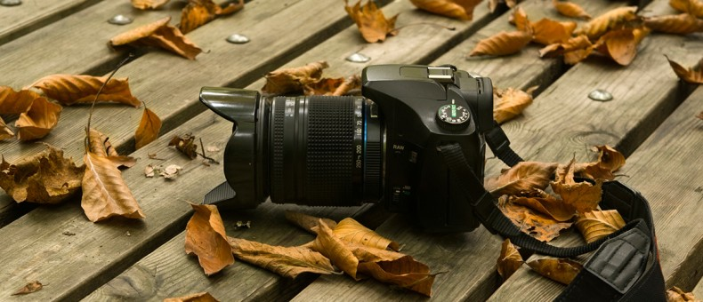

Photography is the art and technique of obtaining lasting images due to the action of light. It is employed in many fields of science, manufacturing and business, as well as its more direct uses for art, film and video production, recreational purposes, hobby, and mass communication. Today photography is practiced by millions of people around the world armed with good cameras. Currently, cameras with a good optics and many options that add flexibility.The emergence of digital cameras, mixed cameras with video and photography in virtual reality environments complicate, enriching, the future of this art.
An amateur photographer is one who practices photography as a hobby/passion and not for profit. Amateur photography grew during the late 19th century due to the popularization of the hand-held camera. Nowadays it has spread widely through social media and is carried out throughout different platforms and equipment, switching to the use of cell phone as a key tool for making photography more accessible to everyone.
Everybody can make a good photo if they know the correct way to use a camera and how comfortable you feel with it. Also everybody can act like a model if they are willing to do everything to give the best photo.Phtography is subjective because the best photo is going to be the one that gives you more feelings, the one that makes you cry, laugh or even make you remember something good. What I like of Photography is that there exist several ways to get a good photo. I like the feeling it gives when you see your work done. It takes lots of hours to finish and be satisfied with your work But definitely it worth it!
I really love photography because you can use feelings to get people say they have got the best photo. You can play as a child in the studio, in the park or wherever you are taking them. You can sit on the floor, lay on it, climb a tree and other things to have a great shot. Creativity is the key to make original and beautiful sketchs. I love that you are able to implement your own ideas and use whatever you want to achieve THE photo. You can tell a story with a photo. You can make people imagine their own. Your photo will talk for you and it will express what you want to.
If you want to know about some famous photographers and different photography tecniques visit the following page:
The Rebirth of Tintype: An Old Photographic Medium Is Revitalized